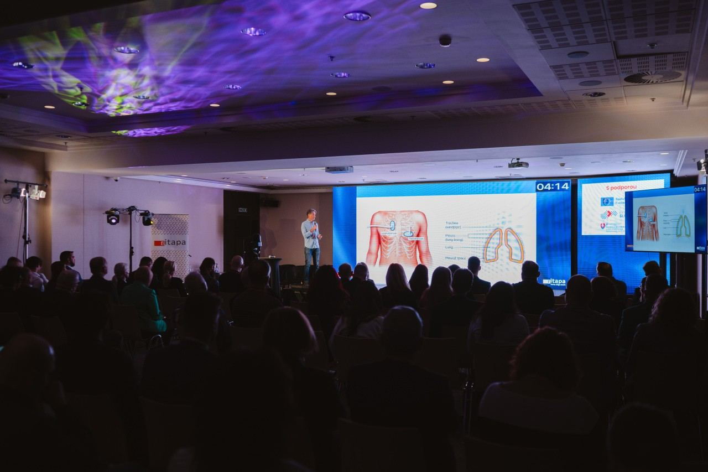

Conferences · Tech
Autumn ITAPA 2026
- Dates
- –
- Venue
- Crowne Plaza Bratislava, Hodžovo námestie 2
- Location
- Bratislava, Slovakia
- Format
- In-person
- Category
- Tech
- Industry
- Tech
- Organiser
- ITAPA
- Price
- Official Autumn ITAPA 2026 page: three-day pass €450 incl. VAT; one-day pass €199 incl. VAT (Health, Cybersec or Digi Day); discounted passes for healthcare professionals €149 incl. VAT and for NGOs and startups €110 incl. VAT; online pass €85 incl. VAT (live stream and recordings, not used as the min/max in-person range).
- Official website
- https://www.itapa.sk/20284-en/jesenna-itapa-2026/
About
Dates are local civil dates in Slovakia (Central European Time, UTC+1 / UTC+2 in summer).
Topics: eGovernment, digital public services, cybersecurity, health IT, artificial intelligence.
No organiser attendance figure found on the official pages fetched 24 Nov 2026. Ranked by our estimated size tier 'small' (under 10,000 attendees/visits), a judgement from format, venue and scale, not an official number.
Sources
- Official — https://www.itapa.sk/20284-en/jesenna-itapa-2026/
- Official — https://www.itapa.sk/jesenna-itapa-2026/
- Official — https://www.itapa.sk/get-to-know-the-itapa-events/
Venue
- Crowne Plaza Bratislava — Hotel conference venue · Bratislava, Slovakia